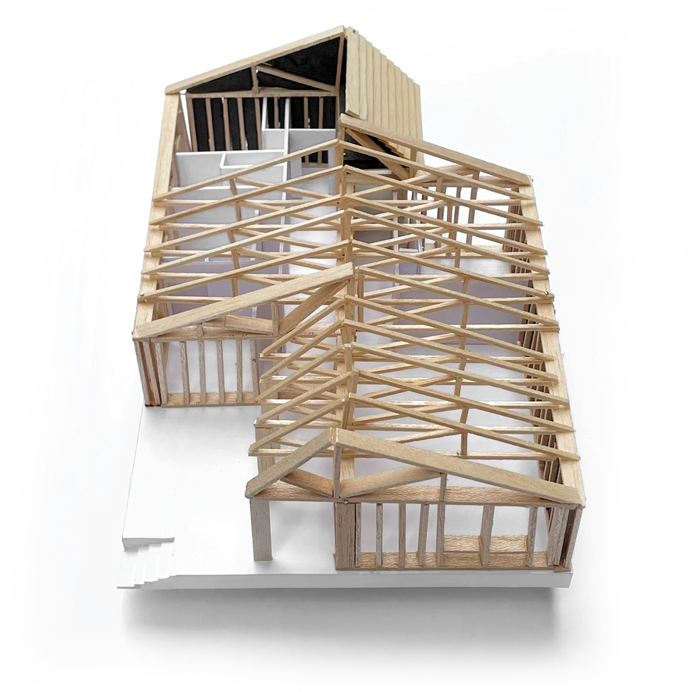

maison d'estivage au Lac d'Issarlès
client : privé
date : mai 2023
mission : études > PC
type : logement
Située dans le village du Lac d'Issarlès à plus de 1000m d'altitude, cette petite maison d'estivage doit accueillir ponctuellement une famille de cinq personnes pour profiter des paysages sportifs de l'Ardèche. La maison allant être la première construction sur cette zone depuis sa requalification dans les documents d'urbanisme, sa conception a démarré dès 2023 pour s'assurer de l'acceptabilité du permis de construire. Son acceptation courant 2024 a permis à la famille de démarrer les travaux avec un maitre d'oeuvre local pour le clos et couvert en attendant de trouver le temps pour terminer eux-mêmes le second oeuvre.
Merci à Ulysse Coriton, notre premier stagiaire, pour la maquette.

Conçue pour un usage ponctuel aux beaux jours, la maison est entièrement pensée selon des principes d'efficacité et de passivité thermique. L'entièreté des ouvertures sont au Sud et à l'Ouest pour faciliter la prise de chaleur via l'apport solaire et au contraire tourner le dos aux vents froids venant du Nord et de l'Est. Le recours à des murs ossature bois isolés en paille et un chauffage au sol assure un maitien de la température au sein de l'édifice la nuit, en effet la haute altitude du projet lui fait endurer de grands différenciels de température avec le jour.

Le plan de la maison découle de la simplicité de son système de construction. En employant des profils symétriques entre le bloc jour et le bloc nuit, le projet développe une double circulation centrale qui permet de multiplier les placards de stockage, essentiels pour une maison de vacances. L'entrée est dédoublée, donnant soit directement dans le couloir ou passant par une grande buanderie permettant de stocker les VTT et autres engins sportifs. En face, les chambres sont regroupées et donnent toutes vers l'Est où le grand terrain de la famille descend doucement vers les champs en contrebas.
